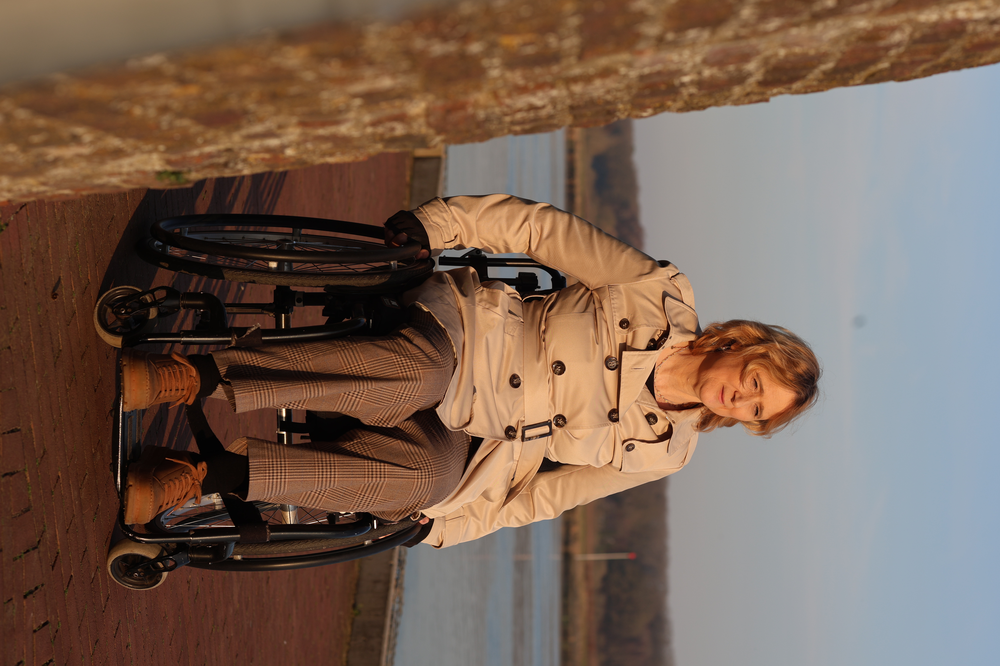

Stress zit niet alleen in je hoofd. Het zit in je schouders, je ademhaling, je hele lijf. Met 25 jaar ervaring als fysiotherapeut begrijp ik die verbinding als geen ander. Die kennis maakt mijn begeleiding als psycholoog en coach completer.

De meeste mensen gaan naar een fysiotherapeut voor hun rug en naar een psycholoog voor hun stress. Twee losse werelden. Maar zo werkt je lichaam niet.
Stress verkrampt je spieren. Pijn maakt je somber. Angst houdt je lichaam in de alarmstand. En als je al maanden rondloopt met chronische klachten, dan weet je: het ene versterkt het andere.
Toch worden lichaam en geest in de zorg vaak apart behandeld. Daardoor blijf je soms hangen. Je krijgt oefeningen voor je nek, maar niemand vraagt waarom je schouders zo hoog staan. Je praat over je zorgen, maar niemand merkt op dat je ademhaling oppervlakkig is.
Na 25 jaar als fysiotherapeut heb ik duizenden mensen behandeld. Ik zag het keer op keer: achter fysieke klachten zit vaak een mentale component. En andersom. Die ervaring neem ik mee in mijn werk als psycholoog en coach.
Niet om je fysiek te behandelen — dat doe ik niet meer. Maar om beter te begrijpen wat er werkelijk speelt. Als jij vertelt over spanning, dan weet ik niet alleen wat dat mentaal betekent, maar ook wat je lichaam op dat moment doet.
Ik bied geen fysiotherapie aan als dienst. Mijn jarenlange ervaring als fysiotherapeut vormt de achtergrond van waaruit ik werk. Het geeft mij een breder perspectief — geen twee behandelingen in één sessie, maar één begeleiding die het hele plaatje ziet.
Je zenuwstelsel is de brug tussen lichaam en geest. Als je gestrest bent, schakelt je zenuwstelsel over naar de alarmstand. Dat voel je: je hart gaat sneller, je spieren spannen aan, je ademhaling wordt oppervlakkig.
Op korte termijn is dat nuttig. Maar als die alarmstand aanhoudt — door zorgen, pijn of onzekerheid — dan raakt je lichaam uitgeput. En je geest ook.
Je krijgt begeleiding van iemand die het hele plaatje ziet. Die snapt waarom je schouders omhoog staan als je over werk praat. Die herkent wanneer spanning niet alleen in je hoofd zit, maar ook in je lijf.
Samen kijken we naar wat je nodig hebt. Soms is dat een gesprek over je gedachten. Soms is het leren hoe je je zenuwstelsel tot rust brengt. Vaak is het een combinatie. Die flexibiliteit maakt het verschil. Voor mensen met MS bied ik daarnaast gerichte MS coaching online aan, waar lichaam en geest centraal staan.
Onderzoek wijst uit dat een gecombineerde aanpak — aandacht voor zowel lichaam als geest — kan bijdragen aan betere resultaten bij stressklachten, chronische pijn en vermoeidheid.
Je merkt dat lichaam en geest bij jou met elkaar verweven zijn. Hieronder herken je jezelf misschien.
Spanningshoofdpijn, rugklachten of vermoeidheid die niet alleen fysiek te verklaren zijn. Je voelt dat er meer speelt.
MS, fibromyalgie, artrose of een andere chronische ziekte. Je zoekt iemand die begrijpt hoe dat je hele leven raakt.
Je schouders staan hoog, je kaak is gespannen, je slaapt slecht. Je lichaam draagt mee wat je hoofd niet kwijt kan.
De fysiotherapeut hielp je rug, maar niet je zorgen. De psycholoog begreep je gedachten, maar niet je lichaam. Je hebt beide nodig.
Je bent nieuwsgierig naar hoe alles samenhangt. Je wilt niet alleen symptomen aanpakken, maar begrijpen wat eronder zit.
Sessies vinden plaats in Grubbenvorst (regio Venlo, Horst, Sevenum) of online via videoconsult.
Nee, ik bied geen fysiotherapie aan als dienst. Mijn 25 jaar ervaring als fysiotherapeut vormt de achtergrond van waaruit ik werk als psycholoog en coach. Het geeft mij een breder perspectief op de verbinding tussen lichaam en geest.
Ik herken wanneer spanning niet alleen mentaal is, maar ook fysiek. Ik begrijp hoe stress je lichaam beïnvloedt en hoe lichamelijke klachten je mentale welzijn raken. Die kennis maakt mijn begeleiding vollediger dan wanneer je alleen naar één kant kijkt.
Voor iedereen die mentale begeleiding zoekt en baat heeft bij iemand die het hele plaatje ziet: lichaam én geest. Vooral mensen met chronische klachten, stressgerelateerde spanning of fysieke symptomen met een mentale component.
Ja, naast sessies in de praktijk in Grubbenvorst bied ik ook online begeleiding via videoconsult. Zo is mijn hulp bereikbaar voor iedereen in Nederland, ongeacht waar je woont.
Begin met een gratis kennismakingsgesprek. Vrijblijvend en op jouw tempo.
Neem contact op →Of bel direct: 06 425 590 22 · info@sabinevanderelsen.nl